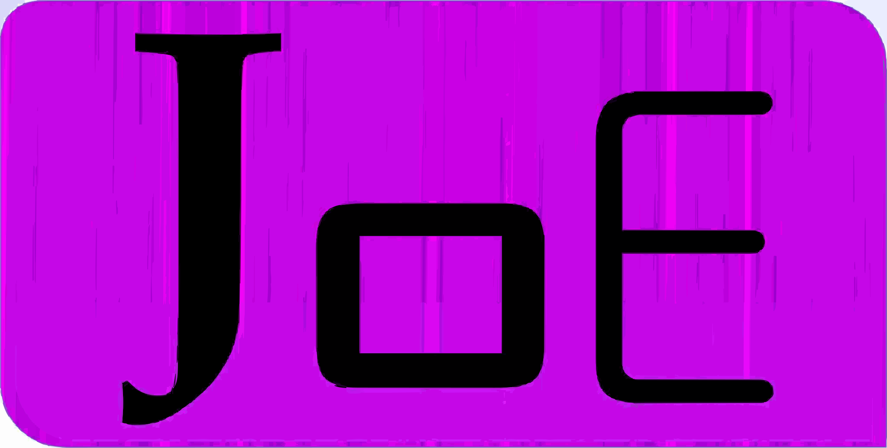

Technical Program Leadership
End-to-end delivery ownership from discovery to launch, sprint planning, stakeholder communication, and cross-team alignment.
Dynamic and visionary technology leader with extensive experience in global software delivery, platform modernization, and cross-team collaboration.
I architect and deliver dependable, high-quality systems that power global-scale products. My expertise spans distributed microservices, event-driven architectures, and continuous delivery pipelines. I love partnering with stakeholders to turn complex requirements into intuitive customer experiences.
End-to-end delivery ownership from discovery to launch, sprint planning, stakeholder communication, and cross-team alignment.
Design resilient services with Kafka, AWS Lambda, and serverless architectures, ensuring seamless integrations and scale.
Build secure CI/CD pipelines, infrastructure-as-code, and observability dashboards to accelerate releases and maintain compliance.
Craft responsive web applications with Angular and modern design systems, prioritizing accessibility and maintainability.
Architect REST and GraphQL APIs, orchestrate microservices lifecycles, integrate third-party platforms, and optimize data models across SQL and NoSQL stores.
Champion code review culture, introduce automation with Selenium and Jest, and build guardrails for proactive incident prevention.
Responsibilities (Senior Tech Lead):
Responsibilities (Tech Lead):
Responsibilities (Software Engineer):
Responsibilities (Senior Co-Op):

Full-stack trading surveillance suite with NestJS, Kafka, and AWS SQS ensuring regulatory compliance for crypto exchanges.
Designed and deployed REST APIs for video management, payment workflows, and content delivery for high-traffic streaming services.
Migrated legacy adjudication processes onto AWS with modern API gateways, observability, and automated regression testing.
Ecosmob Technologies Pvt Ltd
Web Design and Development, Lambton College
Web Design and Development, Lambton College
Web Design and Development, Lambton College
Web Design and Development, Lambton College
Bachelor of Computer Applications (BCA), Gujarat University
Gujarat University · 2010 – 2013
Gujarat University · 2007 – 2010
Lambton College · 2016 – 2018
I love partnering with bold teams tackling ambitious product challenges. Whether you’re building a new platform or scaling an existing one, let’s connect.
Start a conversation